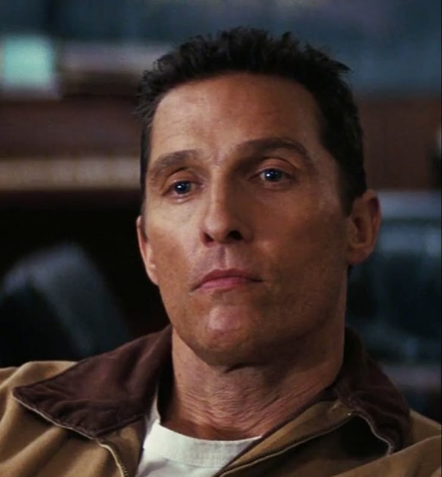
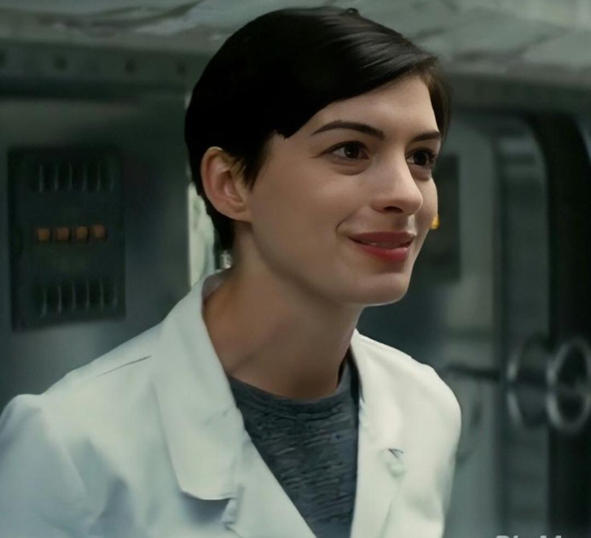
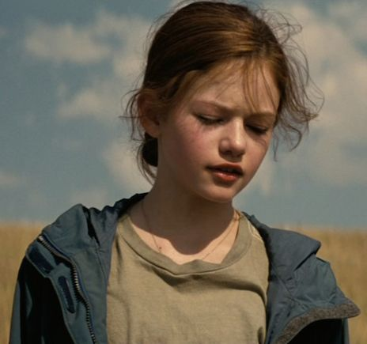
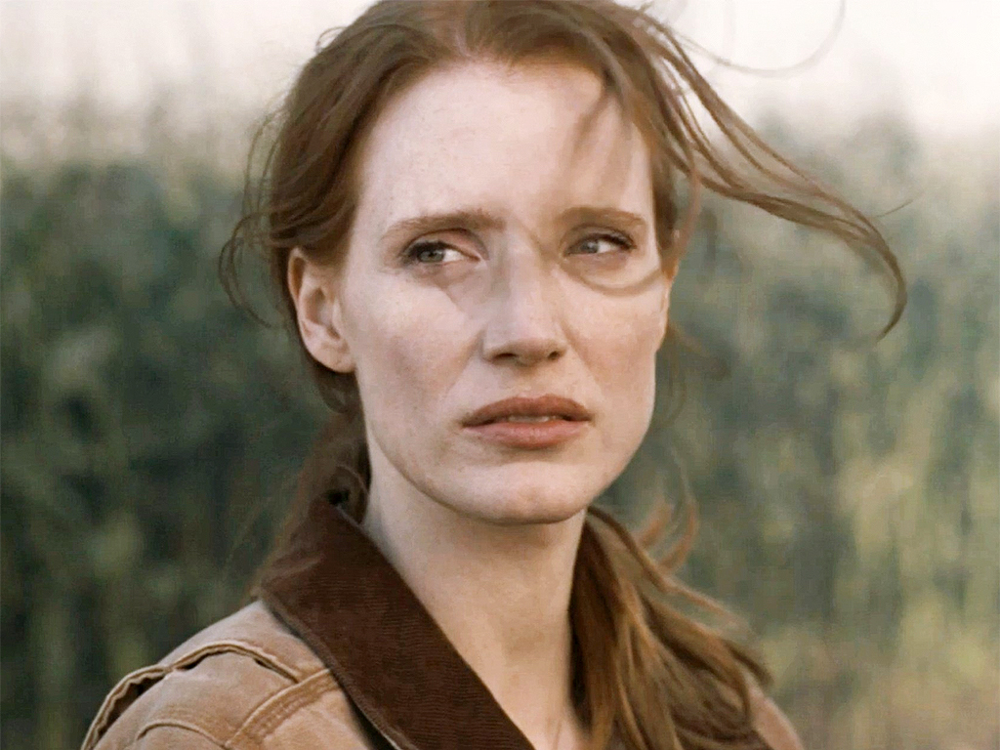
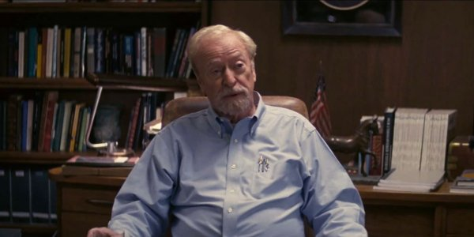
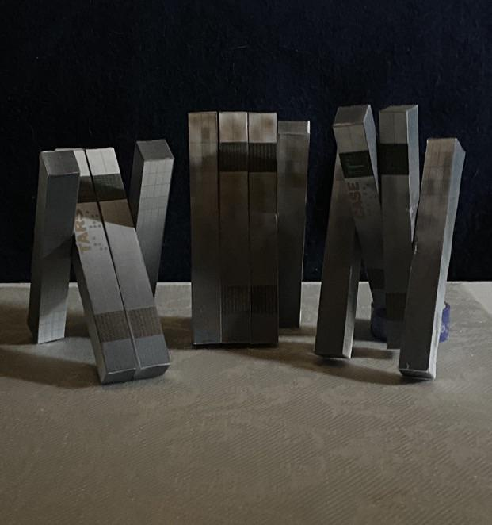

Num futuro próximo e distópico, a Terra enfrenta uma crise alimentar devastadora provocada por tempestades de poeira e pragas agrícolas que exterminaram quase todas as culturas. A sociedade regrediu para uma economia maioritariamente agrária, abandonando o investimento na ciência e na exploração espacial.
Joseph Cooper, um ex-piloto de testes e engenheiro da NASA, vive frustrado como agricultor enquanto cria os seus dois filhos, Tom e Murph. Após uma série de anomalias gravíticas misteriosas no quarto de Murph, Cooper descobre coordenadas geográficas ocultas que o levam a uma instalação ultra-secreta da NASA, liderada pelo Professor Brand.
A equipa revela que um buraco de minhoca apareceu misteriosamente perto de Saturno, colocado por seres desconhecidos. Este portal dá acesso a um sistema solar distante com vários planetas potencialmente habitáveis. Cooper é recrutado para pilotar a nave Endurance e liderar a missão Lazarus, deixando para trás a sua família — com a promessa incerta à sua filha Murph de que irá regressar.
Um pai dedicado e piloto genial. A sua determinação em salvar os filhos serve como o motor emocional de toda a narrativa.

Cientista e bióloga altamente qualificada, guiada tanto pela lógica rigorosa como pela convicção de que o amor é uma força mensurável que transcende o tempo e o espaço.

A filha prodígio de Cooper. Enquanto cresce sentindo-se abandonada pelo pai, torna-se numa cientista brilhante determinada a resolver a equação da gravidade necessária para evacuar a população da Terra.


O cérebro por trás da missão espacial e mentor de Murph, guardador de um segredo doloroso sobre o verdadeiro plano de salvação da humanidade.

Robôs táticos militares avançados com personalidades programáveis, humor ajustável e uma lealdade inabalável durante os momentos mais críticos.
